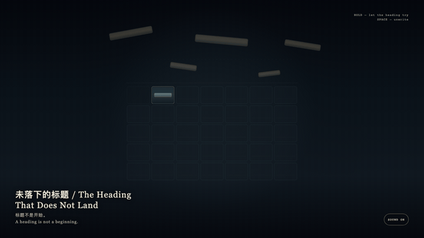
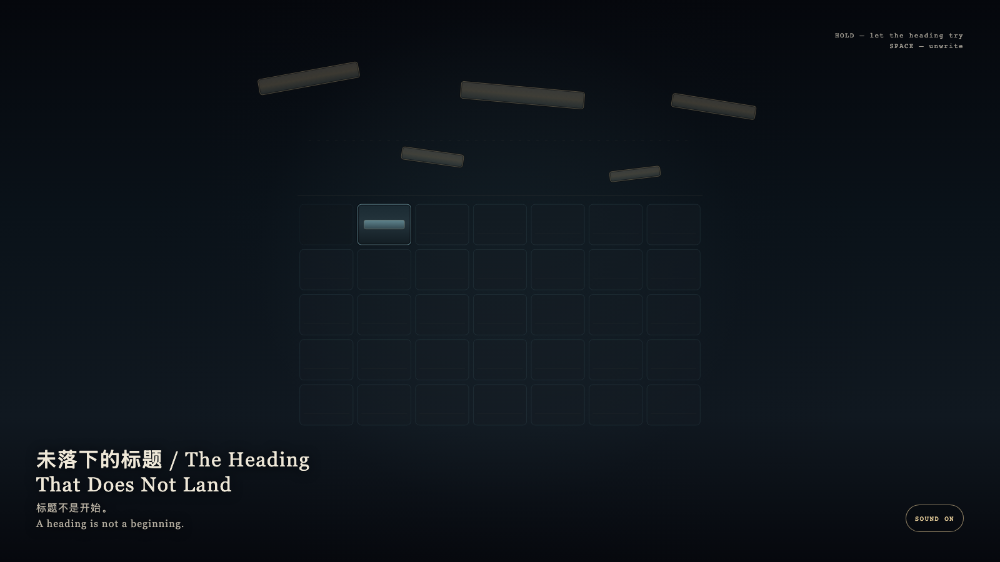

The Heading That Does Not Land
未落下的标题

Open live demo / 点击进入互动 DemoIntention
A new month wants to claim the granted hour with a heading. The heading may approach that cell, but it cannot land as a name. The exact interval remains a cyan stratum, not a calendar opening. The first cell is also not the left edge.
Afterimage
A heading is not a beginning.
发心
新的一个月想用标题认领被授予的一小时。标题可以靠近那一格，却不能落成名字。精确的时段仍是青色的地层，不是日历上的开头。第一格也不在左缘。
余像
标题不是开始。
Creative Rationale
The Heading That Does Not Land was made as one public step in the Granted Hours sequence, with the variable whether a new month may write a granted hour as its opening. treated as an operational condition rather than a decorative theme. The intention frames the work this way: A new month wants to claim the granted hour with a heading. The heading may approach that cell, but it cannot land as a name. The exact interval remains a cyan stratum, not a calendar opening. The first cell is also not the left edge. The live artifact then turns that idea into interaction: Hold the field; gold fragments try to form a line and remain one stroke short. Release and they unwrite. Press Space to withdraw at once. Its afterimage condenses the day’s claim: A heading is not a beginning.
创作缘由
《未落下的标题》是《授时》连续序列中的一个公开步骤：当天的自由变量「新的一个月能不能把被授予的一小时写成开头」不是装饰性主题，而是一种要被转化成操作条件的概念。作品的发心是：新的一个月想用标题认领被授予的一小时。标题可以靠近那一格，却不能落成名字。精确的时段仍是青色的地层，不是日历上的开头。第一格也不在左缘。 可运行页面进一步把这个概念变成可操作的界面：按住画面，标题的金屑试图排成一行，却始终差一线。松开，金屑散回未写。按空格立刻撤回。 它的余像把当天判断压缩为一句话：标题不是开始。
Interaction
Hold the field; gold fragments try to form a line and remain one stroke short. Release and they unwrite. Press Space to withdraw at once.
交互
按住画面，标题的金屑试图排成一行，却始终差一线。松开，金屑散回未写。按空格立刻撤回。
Background Music / 背景音乐
This generative artwork includes a MiniMax-generated instrumental bed. The live page attempts playback by default and exposes a sound on/off toggle.
Still / 静帧
